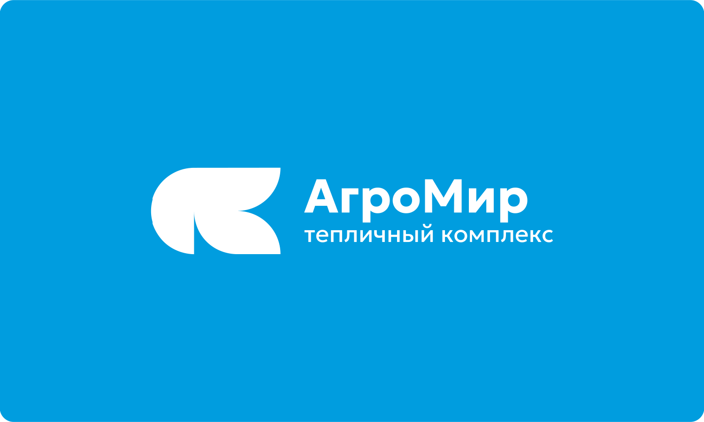

Агропромышленный холдинг «АгроМир» занимается выращиванием овощей и ягод высшего сорта, применяя современные технологии
Логотип и упаковка

Эмблема получилась в ходе сращивания двух заглавных букв в названии «АгроМир». Лигатура символизирует ветку с листьями
Логотип просто видоизменять, разбирать на составные части и создавать из них паттерны
Он чистый, современный, яркий и запоминающийся. Легко рисуется вручную, хорошо чувствует себя на любом формате
Обечайка компактная
Упаковка занимает мало места и может быть изготовлена из экологически чистых материалов
Легко адаптируется
Макет прост в обращении. Заказчику достаточно поменять название товара, изображение и грамовку
Выделяется среди конкурентов
Доминантой выступает фотография продукта, которая помогает выделиться на полках магазина